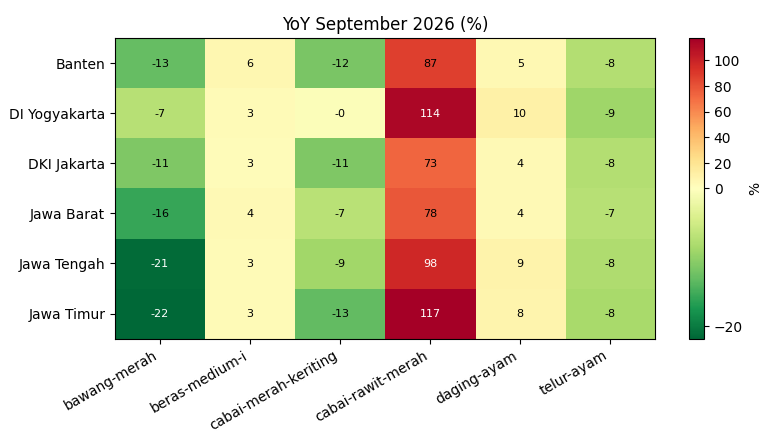

Yasyfa Maisun Majidah
Data Analyst
Data Analyst with a Mathematics background, specializing in sales and cost analytics. I turn scattered spreadsheets and raw data into clear dashboards and insights that help teams monitor performance against plan.
About me
I'm a Mathematics graduate from Universitas Jenderal Soedirman with a strong foundation in statistics and quantitative reasoning. My undergraduate thesis in actuarial science, which calculated long-term care insurance premiums with a multi-state model, trained me to work carefully with numbers and assumptions.
Today I apply that rigor to business data. At Traktor Nusantara, I replaced a heavy Excel report with an automated Power BI dashboard for sales, cost, and plan achievement. Beyond my internship, I've analyzed food price trends with statistical methods in Python and built sales dashboards in Looker Studio. I'm especially interested in FMCG, manufacturing, and infrastructure, where clear sales and cost monitoring drives everyday decisions.
Experience
-
Aug 2026 – Present
Current roleData Analyst Intern
Traktor Nusantara
- Rebuilt the sales and cost monitoring dashboard in Power BI, replacing an Excel dashboard that had become heavy and inefficient to use.
- Automated data intake with Power Query: new data files added to a designated folder are combined and refreshed automatically, so reports stay current without growing a single Excel file.
- Built views for actual vs. plan sales, total cost, and cost per branch, giving the team one place to monitor performance.
- Cleaned, validated, and standardized 73,000+ rows of sales data to ensure accuracy and consistency.
- Performed exploratory analysis in Excel (XLOOKUP, SUMIFS, IFERROR) to combine sources, handle errors, and summarize data by category.
-
Jul 2024
Data Analyst Intern
BPS-Statistics Banyumas Regency
- Filtered and validated national agricultural datasets into regency-level sectoral data for official publications.
- Processed and entered data for 100+ companies in Banyumas Regency.
- Designed publication layout templates for Kecamatan Dalam Angka (Subdistrict in Figures).
Featured projects
Each project includes the full story: the question, the data, the method, and what I found.
-

Analyzed 31,038 rows of daily food prices from Bank Indonesia's PIHPS across six commodities and six provinces, compared with BPS inflation data. Found that the 2026 spike was concentrated in red bird's-eye chili, at +91.5% year-over-year on average.
-

End-to-end analysis of 10,000 furniture orders in Greater Jakarta (2025), from data cleaning to an interactive dashboard. It covers revenue, success and loss rates, and a statistical test of discount effectiveness.
-

Sales & Cost Dashboard
Simulated dataA Power BI dashboard that monitors sales, cost, and gross profit across 16 branches using about 50,000 synthetic transactions, with plan-vs-actual tracking, a one-to-many data model, and custom DAX measures.
-

Analyzed retail sales and profit (USD 725.46K in sales, about 15% margin) across 686 unique customers, from Python EDA to an interactive Looker Studio dashboard. Identified sales concentration in California and Q4 seasonality.
Skills & tools
Daily tools
What I use most in my current role
- Microsoft ExcelXLOOKUP, SUMIFS, data validation
- Power BIPower Query (including automated folder-based data combining), DAX, data modeling
Project experience
Used in projects and training
- Pythonpandas, Matplotlib, Seaborn, SciPy in Google Colab
- SQLGoogle BigQuery
- Looker StudioInteractive dashboards
- Google Apps Script
Core competencies: data cleaning, exploratory data analysis, basic statistics, data visualization, dashboard automation, analytical reporting.
Education & training
Universitas Jenderal Soedirman
GPA 3.67 / 4.00
Thesis: Long-Term Care Health Insurance Premium Calculation Using a Multi-State Model
Training
Let's work together.
I'm open to Data Analyst roles in FMCG, manufacturing, and infrastructure. Feel free to reach out by email or LinkedIn.
- Emailyasyfa.maisun01@gmail.com
- LinkedInlinkedin.com/in/yasyfa-maisun
- GitHubgithub.com/yasyfa-maisun